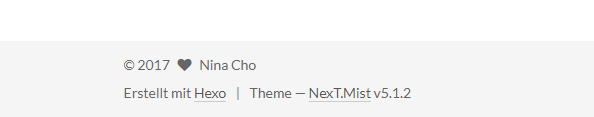
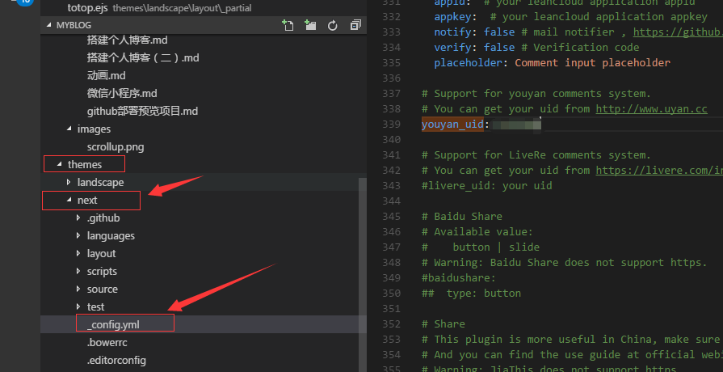
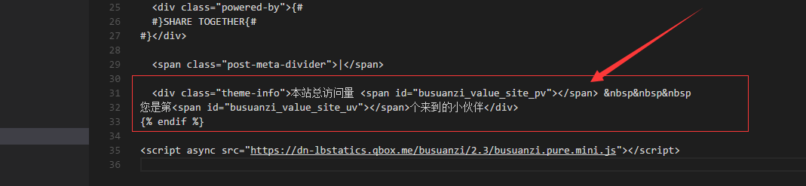

添加置顶按钮
1、找到'themes/landscape/source/js' 创建文件'totop.js', 将以下代码粘贴至该文件
(function($) {
// When to show the scroll link
// higher number = scroll link appears further down the page
var upperLimit = 1000;
// Our scroll link element
var scrollElem = $('#totop');
// Scroll to top speed
var scrollSpeed = 500;
// Show and hide the scroll to top link based on scroll position
scrollElem.hide();
$(window).scroll(function () {
var scrollTop = $(document).scrollTop();
if ( scrollTop > upperLimit ) {
$(scrollElem).stop().fadeTo(300, 1); // fade back in
}else{
$(scrollElem).stop().fadeTo(300, 0); // fade out
}
});
// Scroll to top animation on click
$(scrollElem).click(function(){
$('html, body').animate({scrollTop:0}, scrollSpeed); return false;
});
})(jQuery);
2、找到’themes/landscape/layout/_partial/after-footer.ejs’ 将以下代码添加至文件尾
<%- partial('totop') %>
<script src="<%- config.root %>js/totop.js"></script>
3、找到’themes/landscape/layout/_partial’，创建文件’totop.ejs’, 将以下代码粘贴至该文件
<div id="totop" style="position:fixed;bottom:150px;right:50px;cursor: pointer;">
<a title="返回顶部"><img src="/images/scrollup.png" width="50%"/></a>
</div>
这里的img 图片路径 搞死我了 一开始是放在themes内的 发现’hexo g’编译后找不到，本地是可以跟踪到的, 后来发现编译后的图片路径是有改变的 至于改变到哪里具体要去看源码
所以类似这样公共图片的，简单粗暴的放在跟根目录下的images下。
4、将backtop的图片添加至根目录下的images下， 如图
5、 执行’hexo g’, 刷新页面即可
更换主题
找到你喜欢的主题git链接，如next的主题就是’https://github.com/iissnan/hexo-theme-next themes/next’， nextAPI
打开GitBash 定位到随便一个目录。执行下面代码
git clone https://github.com/iissnan/hexo-theme-next themes/next
下载后 你会发现有个文件夹’themes’ 打开该文件夹，复制里面’next’的文件夹至本地hexo的’/themes’下，如图

执行下面代码
hexo clean # 清除缓存
hexo g # 编译
hexo s -p 3600 # 本地预览 打开locahost:3600 预览ok
hexo d # 本地预览ok 就部署至gtihub
本地预览是ok的 但是gtihub.io上面看的主题没有改变 那就是缓存问题 强刷页面 骚等十分钟再去查看即可
修改主题底部，找了很多资料都没查出来 好烦躁呀 不改实在对不起我的强迫症

終于都給我找到怎麽改了, 下面就一起來修改
1、找到’\themes\next\layout_partials\’下面的footer.swig文件，打开会发现，如下图的语句，修改为你要的就行了，修改后 重新编译下 刷新页面就行了
添加评论功能 待续……
NexT目前出到5.1.0版本，功能模块已经相当的丰富。NexT主题集成了评论系统，只需要设置相关的属性即可实现功能，
其目前支持多说、Disqus、Facebook评论、Hyper评论、网页云跟帖等，其中“多说”是NexT推荐的评论系统,但是官网项目关闭了 omgggg 不活了
所以我看了下其他人的博客发现友言挺多人推荐的，下面来
添加友言版的评论功能
1、 注册友言官网
注册后 出现下图

2、打开next主题配置文件，在其中找到属性youyan_uid，然后在:后添加之前复制的uid，如下图所示：

如果配置文件找到的’youyan_uid’被注释掉的，去掉注释就行了，
但是部署上去后发现gtihub并没有显示评论功能，本地预览是ok的，所以友言后续我有时间再去看下什么原因，这个原因待续….
其实next是集成了Disqus的 但是你懂得 中国国情
1、
如需取消某个 页面/文章 的评论，在 md 文件的 front-matter 中增加 comments: false
这里强调一下：所有属性的设置，其:后必须有一个空格。
添加头像
在站点配置文件，不是主题配置文件中，（其实设置在哪个配置文件都可以生效，但设置在主题配置的时候如果后续你要换主题那么头像配置也就没有了）添加：（如果是注释去掉注释就行了，不存在就新增）
avatar: url #avatar: /iamges/avatar.jpg （路径是在source/iamges下）
把侧边栏头像变成圆形，并且鼠标停留在上面发生旋转效果
修改themes\next\source\css_common\components\sidebar\sidebar-author.styl,找到’site-author-image’這個類，將以下代碼替換，刷新頁面即可
.site-author-image {
display: block;
margin: 0 auto;
padding: $site-author-image-padding;
max-width: $site-author-image-width;
height: $site-author-image-height;
border: $site-author-image-border-color;
border-radius: 50%;
webkit-transition: 1.4s all;
moz-transition: 1.4s all;
ms-transition: 1.4s all; transition: 1.4s all;
}
.site-author-image:hover {
background-color: #55DAE1;
webkit-transform: rotate(360deg) scale(1.1);
moz-transform: rotate(360deg) scale(1.1);
ms-transform: rotate(360deg) scale(1.1);
transform: rotate(360deg) scale(1.1);
}
统计访问量
我看站点访问统计量计算 多人推荐我使用不蒜子，那就用这个吧，下面来操作
找到站点的themes/next/layout/_partials目录下的footer.swig文件
<script async src="https://dn-lbstatics.qbox.me/busuanzi/2.3/busuanzi.pure.mini.js"></script>
本站总访问量 <span id="busuanzi_value_site_pv"></span>    
您是第<span id="busuanzi_value_site_uv"></span>个来到的小伙伴
如图：我是插在这里，位置看大家喜欢
